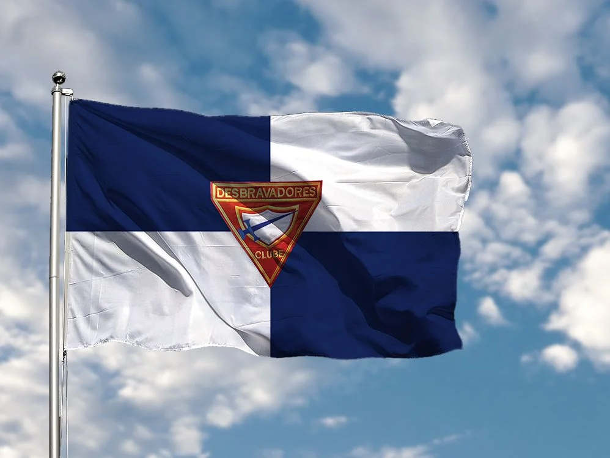
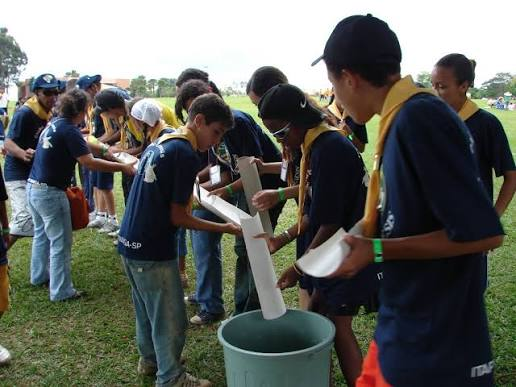
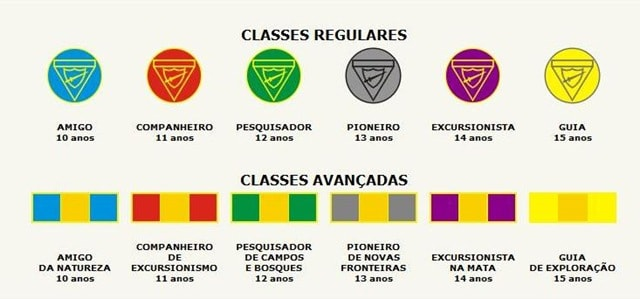
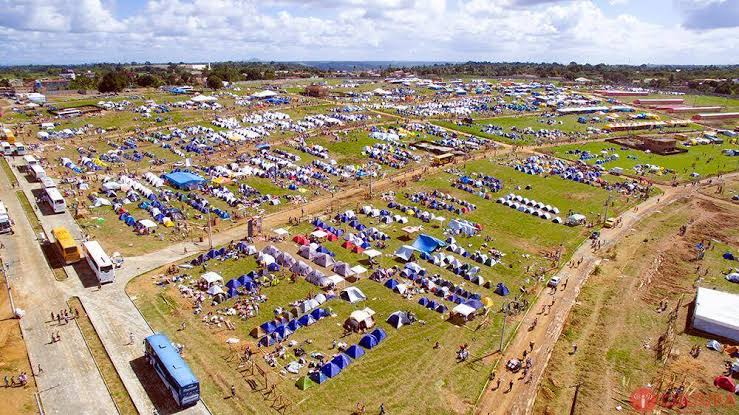

Meninos e meninas com idades entre 10 e 15 anos, de diferentes classes sociais, cor, religião. Reúnem-se, em geral, uma vez por semana para aprender a desenvolver talentos, habilidades, percepções e o gosto pela natureza.

Participamos de acampamentos, trilhas, projetos comunitários, ações solidárias, atividades ao ar livre e momentos de aprendizado que fortalecem valores como respeito, disciplina, responsabilidade e trabalho em equipe. Cada atividade é uma oportunidade para aprender novas habilidades, criar amizades e superar desafios.

Os jovens estudam temas diversos para ganhar especialidades. Existem mais de 450 especialidades em áreas como ciência, artes, esportes, habilidades domésticas e natureza. Participação em desfiles cívicos, campanhas de doação de sangue, ajuda em desastres naturais e projetos sociais (como o recolhimento de alimentos e agasalhos).

Embora seja um programa promovido pela Igreja Adventista, o clube é aberto a qualquer jovem, independentemente de sua fé ou religião. Eles usam um uniforme oficial (geralmente caqui/verde-oliva com um lenço amarelo ao pescoço) que exibe as especialidades e classes que o desbravador já concluiu. O lenço é o símbolo máximo do de quem o representa. O clube é guiado por um Voto e uma Lei, que reforçam valores como respeito, pureza, lealdade, bondade e o serviço a Deus e à humanidade.

O movimento existe desde a década de 1950 (oficialmente) e hoje está presente em mais de 160 países, com milhões de membros espalhados por dezenas de milhares de clubes locais. No Brasil e na América do Sul, a força do movimento é gigantesca, reunindo centenas de milhares de jovens em eventos massivos conhecidos como Camporis (grandes acampamentos que reúnem milhares de desbravadores de uma vez). Em resumo, é um programa focado em formar cidadãos conscientes, desenvolver habilidades práticas para a vida e fortalecer a fé e o caráter dos adolescentes através da aventura e do serviço comunitário.

Nascido em 14/10/1990, na Igreja do Jardim Eliana em São Paulo, Com a sua Primeira Diretora Ana Cristina Lel da Silva como o Vice Cécero Salustiano. O Nome do Clube veio a apos a Cristina Ler uma livro de Ellen G. White e Assim Surgiu o Nome "O Nebulosa de Orion" ! reuniões eram realizadas na quadra da Escola Municipal Plínio Salgado com participação inicial de 20 Desbravadores. Todas as unidades do Clube tem nome de Estrela ou Constelação (Seguindo até hoje essa tradição). Durante todo o tempo o Senhor tem nos guiado e abençoado levando muitos Desbravadores ao Batismo. E até Hoje o clube Recebidos Muitas béncãos de Deus O Clube Passou Por muitas Coisas e mesmo assim Deus Esteva lá !